Abstract : The goal of this lecture is to manipulate data in arbitrary dimensions using graph-based method. The points is the data are linked together in a graph structure. Geodesic computations can be performed to compute distance on the dataset.
path(path, 'toolbox_dimreduc');
path(path, 'toolbox_dimreduc/toolbox/');
path(path, 'toolbox_dimreduc/data/');
path(path, 'toolbox_graph');
cd toolbox_graph
compile_mex;
cd ..
name = 'swissroll'; % you can also try with 'scurve'
n = 800; % number of points
[X,col] = load_points_set( name, n );
clf; plot_scattered(X,col);
axis equal; axis off;
options.use_nntools = 0; % set to 1 if you have compile TStool for your machine, this will speed up computations
options.nn_nbr = 7; % number of nearest neighbor
% compute NN graph and the distance between nodes
[D,A] = compute_nn_graph(X,options);
% display the graph
clf; plot_graph(A,X, col);
axis tight; axis off;
% set up the length of the edges (0 for no edges)
D(D==Inf) = 0; % weight on the graph
% find some cool location for starting point
[tmp,start_point] = min( abs(col(:)-mean(col(:)))); % starting point
% compute the geodesic distance
[d,S] = perform_dijkstra(D, start_point);
% display the graph with distance colors
clf; hold on;
plot_scattered(X, d);
h = plot3(X(1,start_point), X(2,start_point), X(3,start_point), 'k.');
set(h, 'MarkerSize', 25);
axis tight; axis off; hold off;
| 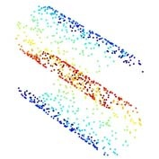 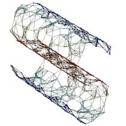
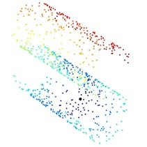 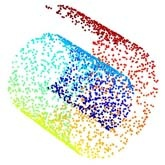 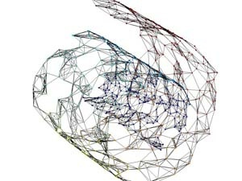 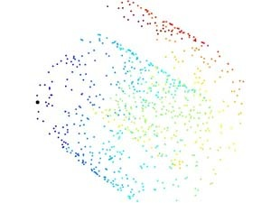 |
| Two examples of 3D point clouds (left) ; corresponding
NN-graph (center) ; geodesic distance to the point in black (right), blue means close. |
% dimension reduction using PCA
[Y,xy] = pca(X,2);
% display
clf; plot_scattered(xy,col);
axis equal; axis off;
% dimension reduction using Isomap
options.nn_nbr = 7; % number of NN for the graph
xy = isomap(X,2, options);
% display
clf; plot_scattered(xy,col);
axis equal; axis off;
| 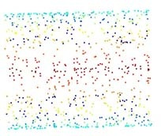
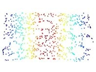 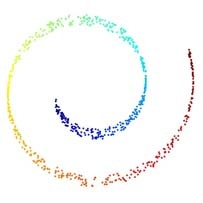 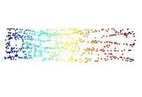 |
| Original 3D data set (left) ; 2D flattening using PCA
(center) and using Isomap (right). Note how the PCA does not recover the simple 2D parameterization of the manifold since it is a linear process. In contrast, Isomap is able to "unfold" the curvy surface. |
name = 'disks';
options.nbr = 1000;
% Read database
M = load_images_dataset(name, options);
% turn it into a set of points
a = size(M,1);b = size(M,2);n = size(M,3);
X = reshape(M, a*b, n);
% perform isomap
options.nn_nbr = 7;
options.use_nntools = 0;
xy = isomap(X,2, options);
k = 30;
clf; plot_flattened_dataset(xy,M,k);
% perform pca
[tmp,xy] = pca(X,2);
clf; plot_flattened_dataset(xy,M,k);
name = 'frey_rawface';
options.nbr = 2000;
% Read database
M = load_images_dataset(name, options);
% subsample at random
n = 1000;
sel = randperm(size(M,3));
M = M(:,:,sel(1:n));
M = permute(M,[2 1 3]); % fix x/y orientation of the faces
% turn it into a set of points
a = size(M,1);b = size(M,2);n = size(M,3);
X = reshape(M, a*b, n);
% perform isomap
options.nn_nbr = 7;
options.use_nntools = 0;
xy = isomap(X,2, options);
k = 30;
clf; plot_flattened_dataset(xy,M,k);
% perform pca
[tmp,xy] = pca(X,2);
clf; plot_flattened_dataset(xy,M,k);
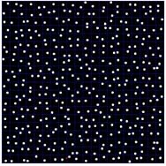 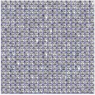
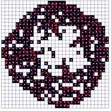 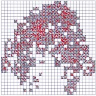
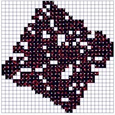 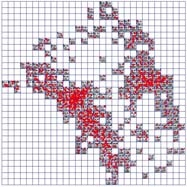Dimension reduction for two different libraries of images.
Left: translating disks, right: face images.
Although the disks data set depends on 2D translation, this is not
a flat (euclidean) manifold (it is a bit curvy due to the disk shape).
This is why the PCA mapping does not recover exactly a 2D square.
The face database exhibits a more complex embedding.
Copyright © 2006 Gabriel Peyré